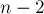
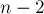
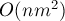

MAXimal
добавлено: 10 Jun 2008 23:08
редактировано: 10 May 2012 23:22
Содержание [скрыть]
Вершинная связность. Свойства и нахождение
Определение
Пусть дан неориентированный граф  с
с  вершинами и
вершинами и  рёбрами.
рёбрами.
Вершинной связностью  графа называется наименьшее число вершин, которое нужно удалить, чтобы граф перестал быть связным.
графа называется наименьшее число вершин, которое нужно удалить, чтобы граф перестал быть связным.
Например, для несвязного графа вершинная связность равна нулю. Для связного графа с единственной точкой сочленения вершинная связность равна единице. Для полного графа вершинную связность полагают равной  (поскольку, какую пару вершин мы ни выберем, даже удаление всех остальных вершин не сделает их несвязными). Для всех графов, кроме полного, вершинная связность не превосходит  — поскольку можно найти пару вершин, между которыми нет ребра, и удалить все остальные вершины.
(поскольку, какую пару вершин мы ни выберем, даже удаление всех остальных вершин не сделает их несвязными). Для всех графов, кроме полного, вершинная связность не превосходит  — поскольку можно найти пару вершин, между которыми нет ребра, и удалить все остальные вершины.
Говорят, что множество  вершин разделяет вершины
вершин разделяет вершины  и
и  , если при удалении этих вершин из графа вершины
, если при удалении этих вершин из графа вершины  и
и  оказываются в разных компонентах связности.
оказываются в разных компонентах связности.
Ясно, что вершинная связность графа равна минимуму от наименьшего числа вершин, разделяющих две вершины и , взятому среди всевозможных пар .
Свойства
Соотношение Уитни
Соотношение Уитни (Whitney) (1932 г.) между рёберной связностью , вершинной связностью и наименьшей из степеней вершин  :
:
Докажем это утверждение.
Докажем сначала первое неравенство:  . Рассмотрим этот набор из рёбер, делающих граф несвязным. Если мы возьмём от каждого из этих ребёр по одному концу (любому из двух) и удалим из графа, то тем самым с помощью
. Рассмотрим этот набор из рёбер, делающих граф несвязным. Если мы возьмём от каждого из этих ребёр по одному концу (любому из двух) и удалим из графа, то тем самым с помощью  удалённых вершин (поскольку одна и та же вершина могла встретиться дважды) мы сделаем граф несвязным. Таким образом, .
удалённых вершин (поскольку одна и та же вершина могла встретиться дважды) мы сделаем граф несвязным. Таким образом, .
Докажем второе неравенство: . Рассмотрим вершину минимальной степени, тогда мы можем удалить все смежных с ней рёбер и тем самым отделить эту вершину от всего остального графа. Следовательно, .
Интересно, что неравенство Уитни нельзя улучшить: т.е. для любых троек чисел, удовлетворяющих этому неравенству, существует хотя бы один соответствующий граф. См. задачу "Построение графа с указанными величинами вершинной и рёберной связностей и наименьшей из степеней вершин".
Нахождение вершинной связности
Переберём пару вершин и , и найдём минимальное количество вершин, которое надо удалить, чтобы разделить и .
Для этого раздвоим каждую вершину: т.е. у каждой вершины  создадим по две копии — одна
создадим по две копии — одна  для входящих рёбер, другая — для выходящих, и эти две копии связаны друг с другом ребром .
для входящих рёбер, другая — для выходящих, и эти две копии связаны друг с другом ребром .
Каждое ребро исходного графа в этой модифицированной сети превратится в два ребра: и .
Всем рёбрам проставим пропускную способность, равную единице. Найдём теперь максимальный поток в этом графе между истоком и стоком . По построению графа, он и будет являться минимальным количеством вершин, необходимых для разделения и .
Таким образом, если для поиска максимального потока мы выберем алгоритм Эдмондса-Карпа, работающий за время , то общая асимптотика алгоритма составит . Впрочем, константа, скрытая в асимптотике, весьма мала: поскольку сделать граф, на котором алгоритмы бы работали долго при любой паре исток-сток, практически невозможно.